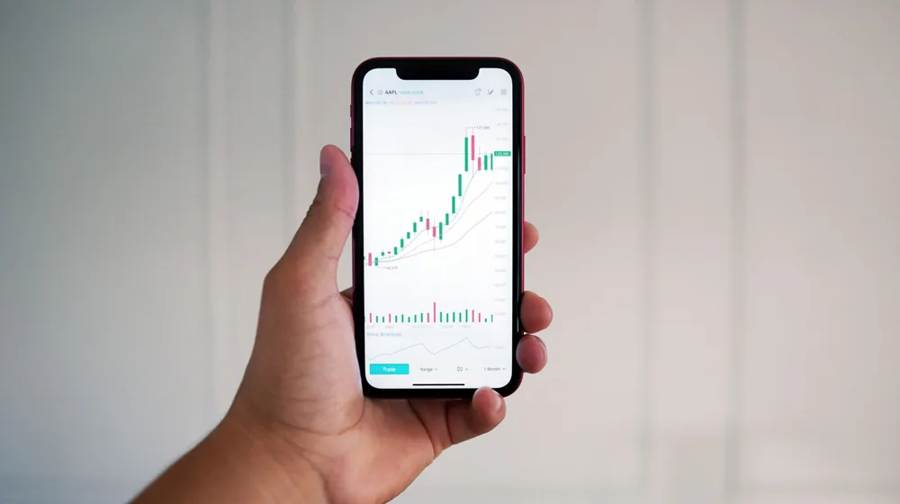

코스피 하락, 불안한 투자자라면 꼭 알아야 할 3가지 핵심 원인
사진: Arturo Añez. / Pexels (무료 이미지, 출처 표기)
최근 코스피(KOSPI, 한국거래소 유가증권시장의 대표적인 주가지수)가 불안정한 흐름을 보이며 많은 투자자들의 우려가 커지고 있습니다. 왜 시장이 하락하는지, 그리고 이런 상황에서 우리는 어떤 준비를 해야 하는지 궁금하실 텐데요. 이 글에서는 코스피 하락의 주요 원인을 글로벌, 국내, 수급 요인으로 나누어 구체적으로 분석하고, 불안정한 시장에서 투자자들이 현명하게 대처할 수 있는 실질적인 원칙들을 제시합니다.
글로벌 경제 불안정, 코스피 하락의 도화선

코스피는 국내 증시지만, 글로벌 경제 상황의 영향을 크게 받습니다. 특히 최근의 하락세는 미국 연방준비제도(Fed, 연준)의 고금리 기조와 세계 경기 침체 우려가 주요 원인으로 꼽힙니다. 연준이 인플레이션(물가 상승)을 잡기 위해 기준금리를 지속적으로 인상하면서 전 세계적인 유동성(자금 흐름)이 위축되고 있습니다.
높은 금리는 기업들의 자금 조달 비용을 늘리고 투자와 성장을 둔화시킵니다. 또한, 고금리로 인해 주식 대신 은행 예금 등 안전자산으로 자금이 이동하는 현상도 나타납니다. 여기에 러시아-우크라이나 전쟁, 미중 갈등 등 지정학적 리스크와 에너지 가격 불안정까지 겹쳐 글로벌 경기 침체 가능성이 커지면서 투자 심리가 위축되고 있습니다.
환율 변동성 역시 중요한 요소입니다. 달러 강세와 원화 약세는 외국인 투자자들에게 한국 주식 투자의 매력을 떨어뜨려 자금 이탈을 가속화할 수 있습니다. 이는 국내 기업의 수입 원가를 높여 물가 상승 압력으로 작용하기도 합니다.
국내 경제 및 기업 실적 부진의 그림자
글로벌 요인과 더불어 국내 경제 상황과 기업 실적도 코스피 하락에 큰 영향을 미칩니다. 한국은행도 미국의 금리 인상에 맞춰 국내 기준금리를 인상하면서 시중 금리가 높아졌고, 이는 가계 부채 부담 증가와 소비 심리 위축으로 이어지고 있습니다.
기업들의 실적 악화도 문제입니다. 고금리, 고환율, 원자재 가격 상승의 '3고(高)' 현상은 기업들의 생산 비용을 증가시키고 수익성을 떨어뜨립니다. 특히 한국 경제의 주력인 반도체, IT 등 수출 중심 산업은 글로벌 경기 둔화와 맞물려 수출 부진을 겪으며 실적 전망이 어두워지고 있습니다.
이러한 복합적인 요인들은 국내 기업들의 매출과 영업 이익에 부정적인 영향을 미쳐, 결국 기업들의 주가 하락으로 이어지는 악순환을 만들 수 있습니다. 금융감독원 등 국내 공식 기관들은 기업 실적에 대한 분석을 지속적으로 발표하고 있습니다.
투자 심리 위축과 수급 불균형
경제 펀더멘털(기초 체력)이 약해지면 투자자들의 심리도 얼어붙게 됩니다. 불확실성이 커지면 안전자산을 선호하는 경향이 강해지는데, 이 과정에서 주식 시장에서 자금이 빠져나가는 '셀 오프(Sell-off)' 현상이 발생합니다. 특히 외국인 투자자와 기관 투자자의 매도세는 코스피에 직접적인 하락 압력을 가합니다.
외국인 투자자들은 국내 증시의 주요 '큰손'으로, 이들의 매도 전환은 시장 전체의 수급 불균형을 심화시킵니다. 또한, 하락장에서 공매도(주식을 빌려 미리 판 후 주가가 내려가면 되사는 투자 기법)가 증가하는 것도 투자 심리를 더욱 위축시키고 지수 하락을 부추기는 요인이 됩니다.
이러한 상황에서 개인 투자자들은 공포 심리에 휩싸여 '패닉 셀링(Panic Selling)'에 나서기도 하는데, 이는 단기적인 주가 급락을 초래할 수 있습니다. 투자 심리는 비이성적으로 움직일 때가 많아, 시장 하락을 더욱 가파르게 만드는 경향이 있습니다.
코스피 하락기, 투자자가 기억해야 할 4가지 원칙
불확실한 시장 상황 속에서도 투자 원칙을 지키는 것이 중요합니다. 다음 4가지 원칙은 하락장에서 현명하게 대처하는 데 도움이 될 수 있습니다.
코스피 하락에 대한 투자자들의 궁금증
시장이 불안할 때 투자자들이 가장 많이 궁금해하는 질문들을 모아봤습니다. 이는 일반적인 답변이며, 개인의 투자 상황에 따라 다를 수 있습니다.
- Q1: 코스피 하락은 언제까지 지속될까요?
A1: 시장의 바닥을 예측하는 것은 매우 어렵습니다. 하락의 기간과 폭은 글로벌 경제 지표, 각국 중앙은행의 정책, 기업 실적 개선 여부, 지정학적 리스크 등 수많은 변수에 의해 결정됩니다. 많은 전문가들이 다양한 시나리오를 제시하지만, 그 어떤 것도 확정적이지 않으므로 신중하게 접근해야 합니다. - Q2: 하락장에서 어떤 종목에 투자해야 할까요?
A2: 일반적으로 경기 방어주(식품, 통신, 유틸리티 등), 배당주, 그리고 재무 구조가 탄탄하고 현금 흐름이 좋은 우량주가 하락장에서 상대적으로 안정적인 모습을 보일 수 있습니다. 하지만 어떤 종목도 하락장에서 완전히 자유로울 수는 없으므로, 철저한 개별 기업 분석이 선행되어야 합니다. - Q3: 외국인 매도세가 심하면 무조건 빠져야 할까요?
A3: 외국인 매도세는 분명 시장에 큰 영향을 미치지만, 단기적인 수급 요인일 수 있습니다. 외국인 자금이 빠져나가는 이유(예: 자국 금리 인상, 달러 강세)를 파악하고, 장기적인 기업 가치와 성장성에 변화가 없다면 과도한 공포에 휩쓸리기보다는 냉철하게 판단하는 것이 중요합니다.
2024년 5월 현재의 경제 상황과 시장 전망은 지속적으로 변화하고 있습니다. 위에 언급된 내용은 일반적인 분석이며, 개별 투자 결정 시에는 반드시 증권사 전문가와 상담하거나 한국거래소, 금융감독원 등 공식 기관의 최신 정보를 확인하시길 권장합니다.
🔗 이 글도 함께 보면 좋아요: SK하이닉스 실적 발표 분석: 핵심 지표와 시장 전망
관련 추천 상품
주식 투자 전략, 증권사 계좌 관련 인기 상품 보러가기
이 포스팅은 쿠팡 파트너스 활동의 일환으로, 이에 따른 일정액의 수수료를 제공받습니다.